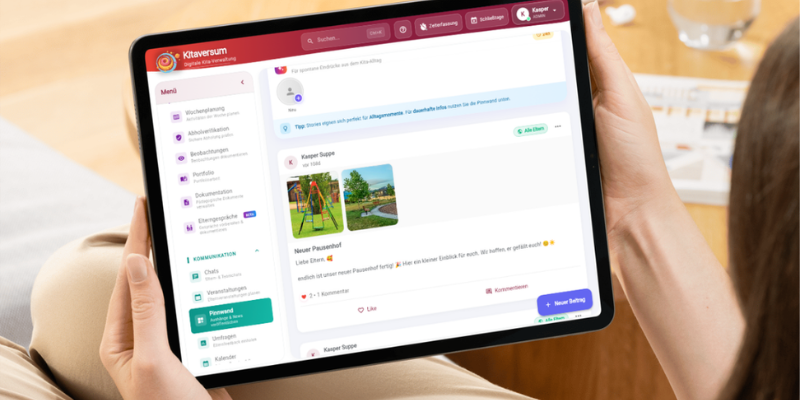

3-Monats-Fortbildungen, Expertenwissen in deinem Fachbereich

3-Monats-Fortbildung
Kita-ExpertIn für ADHS & Autismus
Erkenne, was hinter dem Verhalten steckt, und lerne, wirklich zu helfen. Mit konkreten Strategien für deinen Alltag.
Mehr erfahren →
3-Monats-Fortbildung
Kita-ExpertIn für Verhaltensauffälligkeiten
Verstehe die Ursachen hinter auffälligem Verhalten und entwickle systematische Handlungsstrategien.
Mehr erfahren →3-Monats-Fortbildung
Digitale Medien Beauftragte/r in der Kita
Werde zur Medienpädagogik-Fachkraft deiner Kita, mit Konzept, Kompetenz und Sicherheit im Umgang mit digitalen Medien.
Mehr erfahren →
3-Monats-Fortbildung
Leitung der Vorschule
Entwickle ein tragfähiges Vorschulkonzept, gestalte den Übergang zur Schule und stärke die Kooperation mit Eltern und Grundschule.
Mehr erfahren →3-Monats-Fortbildung
Teamcoach in der Kita
Stärke dein Team, löse Konflikte und schaffe eine Kultur, in der alle gerne und gut zusammenarbeiten.
Mehr erfahren →
3-Monats-Fortbildung
Kita KoordinatorIn für Kinderschutz
Werde die Kinderschutzfachkraft in deiner Einrichtung, mit klaren Handlungsschritten, Konzept und Sicherheit.
Mehr erfahren →3-Monats-Fortbildung
Kinderyoga Kursleitung
Führe eigenständig Kinderyoga-Einheiten durch, altersgerecht, methodisch fundiert und sofort umsetzbar.
Mehr erfahren →3-Monats-Fortbildung
Stressbewältigungscoach
Entwickle eigene Resilienz und lerne, Stressbewältigungsangebote für dein Team und die Kita-Gemeinschaft zu gestalten.
Mehr erfahren →3-Monats-Fortbildung
Marte Meo PraktikerIn
Nutze Videobeobachtung, um Entwicklungsprozesse gezielt zu unterstützen, eine evidenzbasierte Methode für deinen Kita-Alltag.
Mehr erfahren →
3-Monats-Fortbildung
FachberaterIn für Inklusion
Begleite Inklusion in deiner Einrichtung, mit fundierten Konzepten, individuellen Förderplänen und sicherer Elternarbeit.
Mehr erfahren →Tagesfortbildungen, Gezielter Input, sofort anwendbar

Tagesfortbildung
Stressbewältigung im Kita-Alltag
Konkrete Strategien gegen Erschöpfung und Dauerbelastung, für dich und dein Team.
Mehr erfahren →Tagesfortbildung
Sexualentwicklung 0–6 Jahre
Kindliche Sexualentwicklung verstehen, altersgerecht begleiten und sicher kommunizieren.
Mehr erfahren →Tagesfortbildung
Umgang mit Personalmangel
Strategien, Priorisierung und psychische Entlastung, wie du den Alltag trotz Engpässen gesund gestaltest.
Mehr erfahren →
Tagesfortbildung
Autismus im Kita-Alltag
Autismus verstehen, Kinder gezielt begleiten und das Team sensibilisieren, für einen inklusiven Alltag.
Mehr erfahren →Tagesfortbildung
Elterngespräche führen
Schwierige Gespräche sicher und wertschätzend führen, von der Vorbereitung bis zur Nachbereitung.
Mehr erfahren →Tagesfortbildung
Gewaltfreie Kommunikation
Bedürfnisorientiert kommunizieren mit Kindern, Eltern und KollegInnen, im echten Alltag anwendbar.
Mehr erfahren →
Tagesfortbildung
Kinderschutz in der Kita
Kindeswohlgefährdung erkennen, richtig handeln und das Schutzkonzept in deiner Einrichtung stärken.
Mehr erfahren →Tagesfortbildung
ADHS in der Kita, Zwischen Struktur und Flexibilität
ADHS verstehen, erkennen und Kinder im Kita-Alltag gezielt begleiten, mit Praxistipps und Fallbeispielen.
Mehr erfahren →

Tagesfortbildung · Projektthema · Kooperation
Digitale Kita mit Kitaversum
Tablets sinnvoll einsetzen, digitale Elternkommunikation und Medienpädagogik in der Praxis.
Mehr erfahren →Tagesfortbildung · Projektthema · Kooperation
Sprache erforschen und gestalten mit „Wuppi"
Literacy, phonologisches Bewusstsein und Sprachförderung, mit Einblicken in den Materialordner „Mit Wuppi unterwegs".
Mehr erfahren →Tagesfortbildung · Projektthema · Kooperation
Musik, Tanz und Bewegung mit „Bodo"
Musikalisch-rhythmische Projekte für den Kita-Alltag, mit dem Materialordner „Affe Bodo klatscht im Takt".
Mehr erfahren →Tagesfortbildung · Projektthema · Kooperation
Forschen und Entdecken mit „Fred"
Naturwissenschaften kreativ gestalten, Experimente, Forschergeist und kindliche Neugier mit dem Materialordner „Forschen mit Fred".
Mehr erfahren →Tagesfortbildung · Projektthema · Kooperation
Zahlen und Mengen spielerisch vermitteln mit „Baldur"
Frühe mathematische Bildung im Kita-Alltag – Zahlen, Mengen, Formen und Muster mit dem Materialordner „Baldur der Zahlendrache".
Mehr erfahren →Tagesfortbildung
Kinderyoga für deine Kita
Einfache Kinderyoga-Übungen, die du sofort in den Kita-Alltag integrieren kannst, ohne Vorkenntnisse.
Mehr erfahren →Tagesfortbildung · Mit Vorkenntnissen
Praxisübungen für deine Kinderyoga-Einheit
Kreative Yoga-Geschichten, Rituale und Stundengestaltung, für Teilnehmende mit Kinderyoga-Vorkenntnissen.
Mehr erfahren →Tagesfortbildung
Meine Führungsrolle als Kita-Leitung
Deine Rolle als Leitung stärken, Prioritäten setzen und das Team nachhaltig führen.
Mehr erfahren →Tagesfortbildung
Teams leiten und stärken
Teamentwicklung konkret: Wie du eine tragfähige Teamkultur aufbaust und gemeinsam durch schwierige Phasen führst.
Mehr erfahren →Tagesfortbildung
Vorschulkonzept gestalten
Ein fundiertes Vorschulkonzept entwickeln, das zu deiner Einrichtung passt und Kindern wirklich nützt.
Mehr erfahren →Tagesfortbildung
Schule in Sicht, Endspurt in der Kita
Themen für die Vorschule kreativ gestalten, Schulfähigkeit fördern und Eltern einbeziehen.
Mehr erfahren →Teamfortbildungen, Gemeinsam wachsen